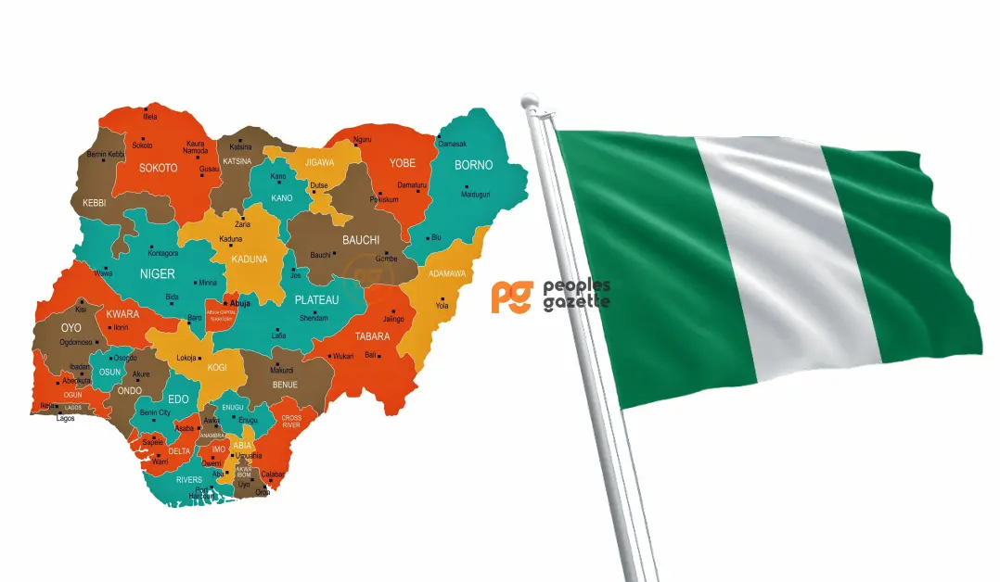

About Me
My name is Sampson Chinedu Ngobi. I was born in Abia State Nigeria but Currently lives in Brasilia Brazil with my wife and our three children. I am a singer song-writer, an English language instructor and BYU Idaho student of Web and computer programming. I like to play soccer. My favorite colors are white, black and blue. I serve a full time mission in Nigerian calabar mission. I am a certified AWS cloud practioner. I am currently serving as an online institute teacher. I am making a career change from a community ophthalmic technician to a web and computer programer. I have visited a few places around the world, including, India , berlin Germany, and I currentlylive in Brasilia Brazil. I graduated from Ogun state College of Health Technology as an Ophthalmic technician. I worked an eye care provider for 5 years. I participated in many eye care Expeditions in Nigeria. It was an amazing career untill I moved to Brazil and discovered how hard language will be for me. I have spend last five years building skills to help make a trasition in my career.
Lagos, Nigeria
Nigeria, officially the Federal Republic of Nigeria,is a country in West Africa.It is situated between the Sahel to the north and the Gulf of Guinea to the south in the Atlantic Ocean. It covers an area of 923,769 square kilometres (356,669 sq mi), and with a population of over 230 million, it is the most populous country in Africa, and the world's sixth-most populous country. Nigeria borders Niger in the north, Chad in the northeast, Cameroon in the east, and Benin in the west. Nigeria is a federal republic comprising 36 states and the Federal Capital Territory, where the capital, Abuja, is located. The largest city in Nigeria is Lagos, one of the largest metropolitan areas in the world and the largest in Africa.